シュエジゴンパゴダ
ShweZyGhongPagoda
モンユアに着いたのは夜。夕食後、散歩がてらホテルの近所のシュエジゴンパゴダに行ってみる。
軽く寄るつもりだったのにそういう時に限って現れるのはおいしい物件だったりする。
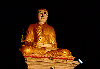
いきなり大仏がお迎えしてくれる夜のパゴダ内はライトアップされていて美しかった。
が、
ふと横を見ると、見逃せない重要な物件を発見してしまった。
マンダレーのエインドーヤーパゴダで見たミャンマー式富士塚である。
何処からともなくかおっさんが現れ、にこやかに富士塚の中へと私を案内する。
塚の内部には中央に仏像、両脇に日本でいう脇侍が一体づつ並んでいる。
うむ〜、これは腹ごなしの散歩では済まなくなってきたぞ。
おっさんに翌朝再び来ることを伝えその日はホテルに戻った。
・・・翌朝・・・
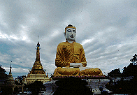
再びシュエジゴンパゴダを訪れるとおっさん、仁王立ちして待ち構えていた。
早速ミャンマー式富士塚に向かう。
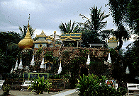
ここにはミャンマーの有名な聖地、チャイティーヨーの大岩（写真の左端）をはじめ様々な名所のミニチュアが並んでいる。
中央右よりの洞穴が夕べ入った仏陀ルーム。
左寄りに緑の金網で囲われた檻がみえる。一体何かと思ったら・・・
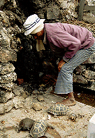
・・・亀を飼っていた。
わざわざ寝ている亀を引きずり出して「持ってみろ」というおっさん。あの〜、亀はいいんですけど〜。
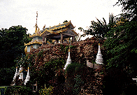 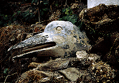
カラスは何かのシンボルらしい。
そういえばマンダレーのエインドーヤーパゴダで見たミャンマー式富士塚にもカラスがいた。
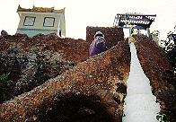
正面右の階段から屋上へ。
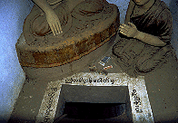
屋上の小屋の中には仏像とこのような不可解な穴が。
ここにお賽銭を入れると階下の仏陀ルームの脇侍の足元に落ちる仕組み。
回収が楽で合理的。
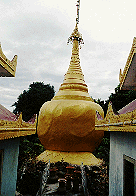
チャイティーヨーの大岩のミニチュアには小さな橋が架かっている。
これもエインドーヤーパゴダで見たものと同じ造り。
ひょっとしてチェーン店か？
この富士塚だけで充分ご満悦なのだが、丁寧に案内してくれるおっさんの手前、帰る訳にもいかず、境内をひととおり見て回る。
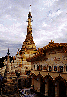
仏陀博物館の二階から。
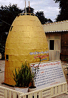
これは仏塔の先端部を模したもの。賽銭箱？
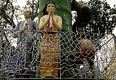
バゴーのチャイプーンの門前で見た竹登りの像。手前の柵の秀逸なデザインに御注目あれ。
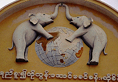
ビルマ語で「象が踏んでも壊れない」と書いてある（ウソ）。
次のスポットへGO！
ミャンマーパゴダ列伝のページへ
珍寺大道場 HOME